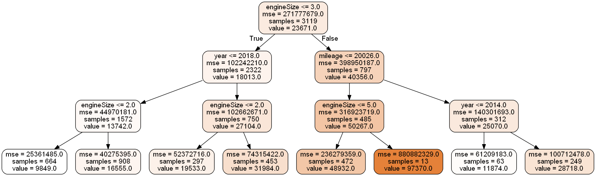
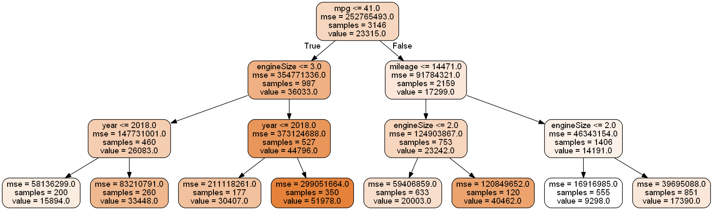
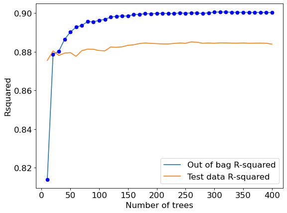
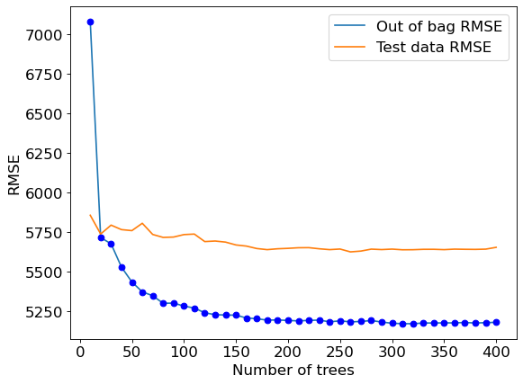
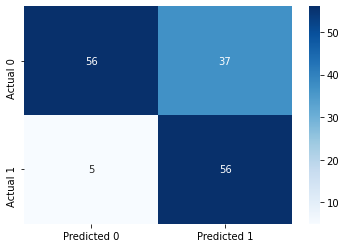
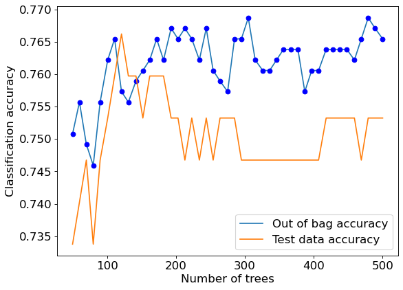
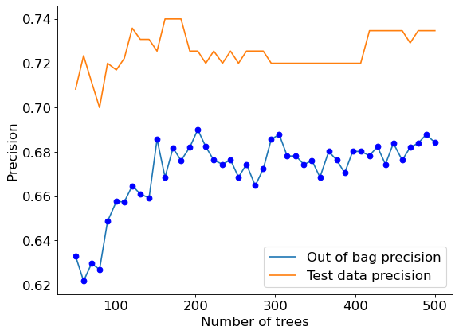
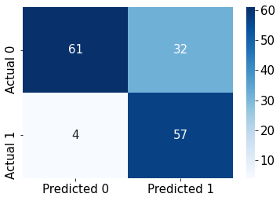
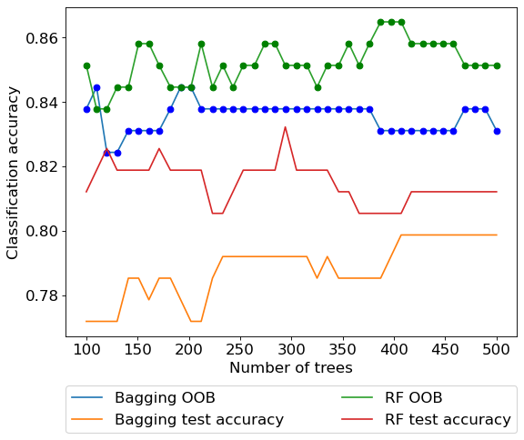

import pandas as pd
import numpy as np
import seaborn as sns
import matplotlib.pyplot as plt
from sklearn.metrics import mean_squared_error
from sklearn.model_selection import cross_val_score,train_test_split
from sklearn.model_selection import KFold
from sklearn.tree import DecisionTreeRegressor,DecisionTreeClassifier
from sklearn.model_selection import GridSearchCV, ParameterGrid
from sklearn.ensemble import BaggingRegressor,BaggingClassifier,RandomForestRegressor,RandomForestClassifier
from sklearn.linear_model import LinearRegression,LogisticRegression
from sklearn.neighbors import KNeighborsRegressor
from sklearn.metrics import roc_curve, precision_recall_curve, auc, make_scorer, recall_score, \
accuracy_score, precision_score, confusion_matrix, mean_squared_error, r2_score
import itertools as it
#Libraries for visualizing trees
from sklearn.tree import export_graphviz
from six import StringIO
from IPython.display import Image
import pydotplus
import time as time
import warnings9 Random Forest
Read section 8.2.2 of the book before using these notes.
Note that in this course, lecture notes are not sufficient, you must read the book for better understanding. Lecture notes are just implementing the concepts of the book on a dataset, but not explaining the concepts elaborately.
#Using the same datasets as used for linear regression in STAT303-2,
#so that we can compare the non-linear models with linear regression
trainf = pd.read_csv('./Datasets/Car_features_train.csv')
trainp = pd.read_csv('./Datasets/Car_prices_train.csv')
testf = pd.read_csv('./Datasets/Car_features_test.csv')
testp = pd.read_csv('./Datasets/Car_prices_test.csv')
train = pd.merge(trainf,trainp)
test = pd.merge(testf,testp)
train.head()| carID | brand | model | year | transmission | mileage | fuelType | tax | mpg | engineSize | price | |
|---|---|---|---|---|---|---|---|---|---|---|---|
| 0 | 18473 | bmw | 6 Series | 2020 | Semi-Auto | 11 | Diesel | 145 | 53.3282 | 3.0 | 37980 |
| 1 | 15064 | bmw | 6 Series | 2019 | Semi-Auto | 10813 | Diesel | 145 | 53.0430 | 3.0 | 33980 |
| 2 | 18268 | bmw | 6 Series | 2020 | Semi-Auto | 6 | Diesel | 145 | 53.4379 | 3.0 | 36850 |
| 3 | 18480 | bmw | 6 Series | 2017 | Semi-Auto | 18895 | Diesel | 145 | 51.5140 | 3.0 | 25998 |
| 4 | 18492 | bmw | 6 Series | 2015 | Automatic | 62953 | Diesel | 160 | 51.4903 | 3.0 | 18990 |
X = train[['mileage','mpg','year','engineSize']]
Xtest = test[['mileage','mpg','year','engineSize']]
y = train['price']
ytest = test['price']Let us make a bunch of small trees with bagging, so that we can visualize and see if they are being dominated by a particular predictor or predictor(s).
#Bagging the results of 10 decision trees to predict car price
model = BaggingRegressor(estimator=DecisionTreeRegressor(max_depth=3), n_estimators=10, random_state=1,
n_jobs=-1).fit(X, y)#Change the index of model.estimators_[index] to visualize the 10 bagged trees, one at a time
dot_data = StringIO()
export_graphviz(model.estimators_[0], out_file=dot_data,
filled=True, rounded=True,
feature_names =['mileage','mpg','year','engineSize'],precision=0)
graph = pydotplus.graph_from_dot_data(dot_data.getvalue())
#graph.write_png('car_price_tree.png')
Image(graph.create_png())
Each of the 10 bagged trees seems to be dominated by the engineSize predictor, thereby making the trees highly correlated. Average of highly correlated random variables has a higher variance than the average of lesser correlated random variables. Thus, highly correlated trees will tend to have a relatively high prediction variance despite averaging their predictions.
#Feature importance can be found by averaging the feature importance in individual trees
feature_importances = np.mean([
tree.feature_importances_ for tree in model.estimators_
], axis=0)
feature_importancesarray([0.13058631, 0.03965966, 0.22866077, 0.60109325])We can see that engineSize has the highest importance among predictors, supporting the visualization that it dominates the trees.
9.1 Random Forest for regression
Now, let us visualize small trees with the random forest algorithm to see if a predictor dominates all the trees.
#Averaging the results of 10 decision trees, while randomly considering sqrt(4)=2 predictors at each node
#to split, to predict car price
model = RandomForestRegressor(n_estimators=10, random_state=1,max_features="sqrt",max_depth=3,
n_jobs=-1).fit(X, y)#Change the index of model.estimators_[index] to visualize the 10 random forest trees, one at a time
dot_data = StringIO()
export_graphviz(model.estimators_[4], out_file=dot_data,
filled=True, rounded=True,
feature_names =['mileage','mpg','year','engineSize'],precision=0)
graph = pydotplus.graph_from_dot_data(dot_data.getvalue())
#graph.write_png('car_price_tree.png')
Image(graph.create_png())
As two of the four predictors are randomly selected for splitting each node, engineSize no longer seems to dominate the trees. This will tend to reduce correlation among trees, thereby reducing the prediction variance, which in turn will tend to improve prediction accuracy.
#Averaging the results of 10 decision trees, while randomly considering sqrt(4)=2 predictors at each node
#to split, to predict car price
model = RandomForestRegressor(n_estimators=10, random_state=1,max_features="sqrt",
n_jobs=-1).fit(X, y)model.feature_importances_array([0.16370584, 0.35425511, 0.18552673, 0.29651232])Note that the feature importance of engineSize is reduced in random forests (as compared to bagged trees), and it no longer dominates the trees.
np.sqrt(mean_squared_error(test.price, model.predict(Xtest)))5856.022395768459The RMSE is similar to that obtained by bagging. We will discuss the comparison later.
9.1.1 Model accuracy vs number of trees
How does the model accuracy vary with the number of trees?
As we increase the number of trees, it will tend to reduce the variance of individual trees leading to a more accurate prediction.
#Finding model accuracy vs number of trees
warnings.filterwarnings("ignore")
oob_rsquared={};test_rsquared={};oob_rmse={};test_rmse = {}
for i in np.linspace(10,400,40,dtype=int):
model = RandomForestRegressor(n_estimators=i, random_state=1,max_features="sqrt",
n_jobs=-1,oob_score=True).fit(X, y)
oob_rsquared[i]=model.oob_score_ #Returns the out-of_bag R-squared of the model
test_rsquared[i]=model.score(Xtest,ytest) #Returns the test R-squared of the model
oob_rmse[i]=np.sqrt(mean_squared_error(model.oob_prediction_,y))
test_rmse[i]=np.sqrt(mean_squared_error(model.predict(Xtest),ytest))
warnings.resetwarnings()
# The hidden warning is: "Some inputs do not have OOB scores. This probably means too few
# estimators were used to compute any reliable oob estimates." This warning will appear
# in case of small number of estimators. In such a case, some observations may be use
# by all the estimators, and their OOB score can't be computedAs we are ensemble only 10 trees in the first iteration, some of the observations are selected in every bootstrapped sample, and thus they don’t have an out-of-bag error, which is producing the warning. For every observation to have an out-of-bag error, the number of trees must be sufficiently large.
Let us visualize the out-of-bag (OOB) R-squared and R-squared on test data vs the number of trees.
plt.rcParams.update({'font.size': 15})
plt.figure(figsize=(8, 6), dpi=80)
plt.plot(oob_rsquared.keys(),oob_rsquared.values(),label = 'Out of bag R-squared')
plt.plot(oob_rsquared.keys(),oob_rsquared.values(),'o',color = 'blue')
plt.plot(test_rsquared.keys(),test_rsquared.values(), label = 'Test data R-squared')
plt.xlabel('Number of trees')
plt.ylabel('Rsquared')
plt.legend();
The out-of-bag \(R\)-squared initially increases, and then stabilizes after a certain number of trees (around 200 in this case). Note that increasing the number of trees further will not lead to overfitting. However, increasing the number of trees will increase the computations. Thus, the number of trees developed should be the number beyond which the \(R\)-squared stabilizes.
#Visualizing out-of-bag RMSE and test data RMSE
plt.rcParams.update({'font.size': 15})
plt.figure(figsize=(8, 6), dpi=80)
plt.plot(oob_rmse.keys(),oob_rmse.values(),label = 'Out of bag RMSE')
plt.plot(oob_rmse.keys(),oob_rmse.values(),'o',color = 'blue')
plt.plot(test_rmse.keys(),test_rmse.values(), label = 'Test data RMSE')
plt.xlabel('Number of trees')
plt.ylabel('RMSE')
plt.legend();
A similar trend can be seen by plotting out-of-bag RMSE and test RMSE. Note that RMSE is proportional to R-squared. You only need to visualize one of RMSE or \(R\)-squared to find the optimal number of trees.
#Bagging with 150 trees
model = RandomForestRegressor(n_estimators=200, random_state=1,max_features="sqrt",
oob_score=True,n_jobs=-1).fit(X, y)#OOB R-squared
model.oob_score_0.8998265006519903#RMSE on test data
pred = model.predict(Xtest)
np.sqrt(mean_squared_error(test.price, pred))5647.1950645556229.1.2 Tuning random forest
The Random forest object has options to set parameters such as depth, leaves, minimum number of observations in a leaf etc., for individual trees. These parameters are useful to prune a decision tree model consisting of a single tree, in order to avoid overfitting due to high variance of an unpruned tree.
Pruning individual trees in random forests is not likely to add much value, since averaging a sufficient number of unpruned trees reduces the variance of the trees, which enhances prediction accuracy. Pruning individual trees is unlikely to further reduce the prediction variance.
Here is a comment from page 596 of the The Elements of Statistical Learning that supports the above statement: Segal (2004) demonstrates small gains in performance by controlling the depths of the individual trees grown in random forests. Our experience is that using full-grown trees seldom costs much, and results in one less tuning parameter.
Below we attempt to optimize parameters that prune individual trees. However, as expected, it does not result in a substantial increase in prediction accuracy.
Also, note that we don’t need to tune the number of trees in random forest with GridSearchCV. As we know the prediction accuracy will keep increasing with number of trees, we can tune the other hyperparameters with a constant value for the number of trees.
model.estimators_[0].get_n_leaves()3086model.estimators_[0].get_depth()29Coarse grid search
#Optimizing with OOB score takes half the time as compared to cross validation.
#The number of models developed with OOB score tuning is one-fifth of the number of models developed with
#5-fold cross validation
start_time = time.time()
n_samples = train.shape[0]
n_features = train.shape[1]
params = {'max_depth': [5, 10, 15, 20, 25, 30],
'max_leaf_nodes':[600, 1200, 1800, 2400, 3000],
'max_features': [1,2,3,4]}
param_list=list(it.product(*(params[Name] for Name in params)))
oob_score = [0]*len(param_list)
i=0
for pr in param_list:
model = RandomForestRegressor(random_state=1,oob_score=True,verbose=False,
n_estimators = 100, max_depth=pr[0],
max_leaf_nodes=pr[1], max_features=pr[2], n_jobs=-1).fit(X,y)
oob_score[i] = mean_squared_error(model.oob_prediction_, y, squared=False)
i=i+1
end_time = time.time()
print("time taken = ", (end_time-start_time)/60, " minutes")
print("Best params = ", param_list[np.argmin(oob_score)])
print("Optimal OOB validation RMSE = ", np.min(oob_score))time taken = 1.230358862876892 minutes
Best params = (15, 1800, 3)
Optimal OOB validation RMSE = 5243.408784594606Finer grid search
Based on the coarse grid search, hyperparameters will be tuned in a finer grid around the optimal hyperparamter values obtained.
#Optimizing with OOB score takes half the time as compared to cross validation.
#The number of models developed with OOB score tuning is one-fifth of the number of models developed with
#5-fold cross validation
start_time = time.time()
n_samples = train.shape[0]
n_features = train.shape[1]
params = {'max_depth': [12, 15, 18],
'max_leaf_nodes':[1600, 1800, 2000],
'max_features': [1,2,3,4]}
param_list=list(it.product(*(params[Name] for Name in params)))
oob_score = [0]*len(param_list)
i=0
for pr in param_list:
model = RandomForestRegressor(random_state=1,oob_score=True,verbose=False,
n_estimators = 100, max_depth=pr[0], max_leaf_nodes=pr[1],
max_features=pr[2], n_jobs=-1).fit(X,y)
oob_score[i] = mean_squared_error(model.oob_prediction_, y, squared=False)
i=i+1
end_time = time.time()
print("time taken = ", (end_time-start_time)/60, " minutes")
print("Best params = ", param_list[np.argmin(oob_score)])
print("Optimal OOB validation RMSE = ", np.min(oob_score))time taken = 0.4222299337387085 minutes
Best params = (15, 1800, 3)
Best score = 5243.408784594606#Model with optimal parameters
model = RandomForestRegressor(n_estimators = 100, random_state=1, max_leaf_nodes = 1800, max_depth = 15,
oob_score=True,n_jobs=-1, max_features=3).fit(X, y)#RMSE on test data
np.sqrt(mean_squared_error(test.price, model.predict(Xtest)))5671.410705964455Optimizing depth and leaves of individual trees didn’t improve the prediction accuracy of the model. Important parameters to optimize in random forests will be the number of trees (n_estimators), and number of predictors considered at each split (max_features). However, sometimes individual pruning of trees may be useful. This may happen when the increase in bias in individual trees (when pruned) is lesser than the decrease in variance of the tree. However, if the pairwise correlation coefficient \(\rho\) of the trees increases by a certain extent on pruning, pruning may again be not useful.
#Tuning only n_estimators and max_features produces similar results
start_time = time.time()
params = {'max_features': [1,2,3,4]}
param_list=list(it.product(*(params[Name] for Name in params)))
oob_score = [0]*len(param_list)
i=0
for pr in param_list:
model = RandomForestRegressor(random_state=1,oob_score=True,verbose=False,
n_estimators = 100, max_features=pr[0], n_jobs=-1).fit(X,y)
oob_score[i] = mean_squared_error(model.oob_prediction_, y, squared=False)
i=i+1
end_time = time.time()
print("time taken = ", (end_time-start_time)/60, " minutes")
print("Best params = ", param_list[np.argmin(oob_score)])
print("Optimal OOB validation RMSE = ", np.min(oob_score))time taken = 0.02856200933456421 minutes
Best params = (3,)
Best score (R-squared) = 5252.291978670057#Model with optimal parameters
model = RandomForestRegressor(n_estimators=100, random_state=1,
n_jobs=-1, max_features=3).fit(X, y)
np.sqrt(mean_squared_error(test.price, model.predict(Xtest)))5656.561522632323Considering hyperparameters involving pruning, we observe a marginal decrease in the out-of-bag RMSE. Thus, other hyperparameters (such as max_features and max_samples) must be prioritized for tuning over hyperparameters involving pruning.
9.2 Random forest for classification
Random forest model to predict if a person has diabetes.
train = pd.read_csv('./Datasets/diabetes_train.csv')
test = pd.read_csv('./Datasets/diabetes_test.csv')X = train.drop(columns = 'Outcome')
Xtest = test.drop(columns = 'Outcome')
y = train['Outcome']
ytest = test['Outcome']#Ensembling the results of 10 decision trees
model = RandomForestClassifier(n_estimators=200, random_state=1,max_features="sqrt",n_jobs=-1).fit(X, y)#Feature importance for Random forest
np.mean([tree.feature_importances_ for tree in model.estimators_],axis=0)array([0.08380406, 0.25403736, 0.09000104, 0.07151063, 0.07733353,
0.16976023, 0.12289303, 0.13066012])# Performance metrics computation for the optimum decision threshold probability
desired_threshold = 0.23
y_pred_prob = model.predict_proba(Xtest)[:,1]
# Classifying observations in the positive class (y = 1) if the predicted probability is greater
# than the desired decision threshold probability
y_pred = y_pred_prob > desired_threshold
y_pred = y_pred.astype(int)
#Computing the accuracy
print("Accuracy: ",accuracy_score(y_pred, ytest)*100)
#Computing the ROC-AUC
fpr, tpr, auc_thresholds = roc_curve(ytest, y_pred_prob)
print("ROC-AUC: ",auc(fpr, tpr))# AUC of ROC
#Computing the precision and recall
print("Precision: ", precision_score(ytest, y_pred))
print("Recall: ", recall_score(ytest, y_pred))
#Confusion matrix
cm = pd.DataFrame(confusion_matrix(ytest, y_pred),
columns=['Predicted 0', 'Predicted 1'], index = ['Actual 0', 'Actual 1'])
sns.heatmap(cm, annot=True, cmap='Blues', fmt='g');Accuracy: 72.72727272727273
ROC-AUC: 0.8744050766790058
Precision: 0.6021505376344086
Recall: 0.9180327868852459
The model obtained above is similar to the one obtained by bagging. We’ll discuss the comparison later.
9.2.1 Model accuracy vs number of trees
#Finding model accuracy vs number of trees
oob_accuracy={};test_accuracy={};oob_precision={}; test_precision = {}
for i in np.linspace(50,500,45,dtype=int):
model = RandomForestClassifier(n_estimators=i, random_state=1,max_features="sqrt",n_jobs=-1,oob_score=True).fit(X, y)
oob_accuracy[i]=model.oob_score_ #Returns the out-of_bag R-squared of the model
test_accuracy[i]=model.score(Xtest,ytest) #Returns the test R-squared of the model
oob_pred = (model.oob_decision_function_[:,1]>=0.5).astype(int)
oob_precision[i] = precision_score(y, oob_pred)
test_pred = model.predict(Xtest)
test_precision[i] = precision_score(ytest, test_pred)plt.rcParams.update({'font.size': 15})
plt.figure(figsize=(8, 6), dpi=80)
plt.plot(oob_accuracy.keys(),oob_accuracy.values(),label = 'Out of bag accuracy')
plt.plot(oob_accuracy.keys(),oob_accuracy.values(),'o',color = 'blue')
plt.plot(test_accuracy.keys(),test_accuracy.values(), label = 'Test data accuracy')
plt.xlabel('Number of trees')
plt.ylabel('Classification accuracy')
plt.legend();
We can also plot other metrics of interest such as out-of-bag precision vs number of trees.
#Precision vs number of trees
plt.rcParams.update({'font.size': 15})
plt.figure(figsize=(8, 6), dpi=80)
plt.plot(oob_precision.keys(),oob_precision.values(),label = 'Out of bag precision')
plt.plot(oob_precision.keys(),oob_precision.values(),'o',color = 'blue')
plt.plot(test_precision.keys(),test_precision.values(), label = 'Test data precision')
plt.xlabel('Number of trees')
plt.ylabel('Precision')
plt.legend();
9.2.2 Tuning random forest
Here we tune the number of predictors to be considered at each node for the split to maximize recall.
start_time = time.time()
params = {'n_estimators': [500],
'max_features': range(1,9),
}
param_list=list(it.product(*(params[Name] for Name in list(params.keys()))))
oob_recall = [0]*len(param_list)
i=0
for pr in param_list:
model = RandomForestClassifier(random_state=1,oob_score=True,verbose=False,n_estimators = pr[0],
max_features=pr[1], n_jobs=-1).fit(X,y)
oob_pred = (model.oob_decision_function_[:,1]>=0.5).astype(int)
oob_recall[i] = recall_score(y, oob_pred)
i=i+1
end_time = time.time()
print("time taken = ", (end_time-start_time)/60, " minutes")
print("max recall = ", np.max(oob_recall))
print("params= ", param_list[np.argmax(oob_recall)])time taken = 0.08032723267873128 minutes
max recall = 0.5990338164251208
params= (500, 8)model = RandomForestClassifier(random_state=1,n_jobs=-1,max_features=8,n_estimators=500).fit(X, y)# Performance metrics computation for the optimum decision threshold probability
desired_threshold = 0.23
y_pred_prob = model.predict_proba(Xtest)[:,1]
# Classifying observations in the positive class (y = 1) if the predicted probability is greater
# than the desired decision threshold probability
y_pred = y_pred_prob > desired_threshold
y_pred = y_pred.astype(int)
#Computing the accuracy
print("Accuracy: ",accuracy_score(y_pred, ytest)*100)
#Computing the ROC-AUC
fpr, tpr, auc_thresholds = roc_curve(ytest, y_pred_prob)
print("ROC-AUC: ",auc(fpr, tpr))# AUC of ROC
#Computing the precision and recall
print("Precision: ", precision_score(ytest, y_pred))
print("Recall: ", recall_score(ytest, y_pred))
#Confusion matrix
cm = pd.DataFrame(confusion_matrix(ytest, y_pred),
columns=['Predicted 0', 'Predicted 1'], index = ['Actual 0', 'Actual 1'])
sns.heatmap(cm, annot=True, cmap='Blues', fmt='g');Accuracy: 76.62337662337663
ROC-AUC: 0.8787237793054822
Precision: 0.6404494382022472
Recall: 0.9344262295081968
model.feature_importances_array([0.069273 , 0.31211579, 0.08492953, 0.05225877, 0.06179047,
0.17732674, 0.12342981, 0.1188759 ])9.3 Random forest vs Bagging
We saw in the above examples that the performance of random forest was similar to that of bagged trees. This may happen in some cases including but not limited to:
All the predictors are more or less equally important, and the bagged trees are not highly correlated.
One of the predictors dominates the trees, resulting in highly correlated trees. However, each of the highly correlated trees have high prediction accuracy, leading to overall high prediction accuracy of the bagged trees despite the high correlation.
When can random forests perform poorly: When the number of variables is large, but the fraction of relevant variables small, random forests are likely to perform poorly with small \(m\) (fraction of predictors considered for each split). At each split the chance can be small that the relevant variables will be selected. - Elements of Statistical Learning, page 596.
However, in general, random forests are expected to decorrelate and improve the bagged trees.
Let us consider a classification example.
data = pd.read_csv('Heart.csv')
data.dropna(inplace = True)
data.head()| Age | Sex | ChestPain | RestBP | Chol | Fbs | RestECG | MaxHR | ExAng | Oldpeak | Slope | Ca | Thal | AHD | |
|---|---|---|---|---|---|---|---|---|---|---|---|---|---|---|
| 0 | 63 | 1 | typical | 145 | 233 | 1 | 2 | 150 | 0 | 2.3 | 3 | 0.0 | fixed | No |
| 1 | 67 | 1 | asymptomatic | 160 | 286 | 0 | 2 | 108 | 1 | 1.5 | 2 | 3.0 | normal | Yes |
| 2 | 67 | 1 | asymptomatic | 120 | 229 | 0 | 2 | 129 | 1 | 2.6 | 2 | 2.0 | reversable | Yes |
| 3 | 37 | 1 | nonanginal | 130 | 250 | 0 | 0 | 187 | 0 | 3.5 | 3 | 0.0 | normal | No |
| 4 | 41 | 0 | nontypical | 130 | 204 | 0 | 2 | 172 | 0 | 1.4 | 1 | 0.0 | normal | No |
In the above dataset, we wish to predict if a person has acquired heart disease (AHD = ‘Yes’), based on their symptoms.
#Response variable
y = pd.get_dummies(data['AHD'])['Yes']
#Creating a dataframe for predictors with dummy variables replacing the categorical variables
X = data.drop(columns = ['AHD','ChestPain','Thal'])
X = pd.concat([X,pd.get_dummies(data['ChestPain']),pd.get_dummies(data['Thal'])],axis=1)
X.head()| Age | Sex | RestBP | Chol | Fbs | RestECG | MaxHR | ExAng | Oldpeak | Slope | Ca | asymptomatic | nonanginal | nontypical | typical | fixed | normal | reversable | |
|---|---|---|---|---|---|---|---|---|---|---|---|---|---|---|---|---|---|---|
| 0 | 63 | 1 | 145 | 233 | 1 | 2 | 150 | 0 | 2.3 | 3 | 0.0 | 0 | 0 | 0 | 1 | 1 | 0 | 0 |
| 1 | 67 | 1 | 160 | 286 | 0 | 2 | 108 | 1 | 1.5 | 2 | 3.0 | 1 | 0 | 0 | 0 | 0 | 1 | 0 |
| 2 | 67 | 1 | 120 | 229 | 0 | 2 | 129 | 1 | 2.6 | 2 | 2.0 | 1 | 0 | 0 | 0 | 0 | 0 | 1 |
| 3 | 37 | 1 | 130 | 250 | 0 | 0 | 187 | 0 | 3.5 | 3 | 0.0 | 0 | 1 | 0 | 0 | 0 | 1 | 0 |
| 4 | 41 | 0 | 130 | 204 | 0 | 2 | 172 | 0 | 1.4 | 1 | 0.0 | 0 | 0 | 1 | 0 | 0 | 1 | 0 |
X.shape(297, 18)#Creating train and test datasets
Xtrain,Xtest,ytrain,ytest = train_test_split(X,y,train_size = 0.5,random_state=1)Tuning random forest
#Tuning the random forest parameters
start_time = time.time()
oob_score = {}
i=0
for pr in range(1,19):
model = RandomForestClassifier(random_state=1,oob_score=True,verbose=False,n_estimators = 500,
max_features=pr, n_jobs=-1).fit(X,y)
oob_score[i] = model.oob_score_
i=i+1
end_time = time.time()
print("time taken = ", (end_time-start_time)/60, " minutes")
print("max accuracy = ", np.max(list(oob_score.values())))
print("Best value of max_features= ", np.argmax(list(oob_score.values()))+1)time taken = 0.21557459433873494 minutes
max accuracy = 0.8249158249158249
Best value of max_features= 3sns.scatterplot(x = oob_score.keys(),y = oob_score.values())
plt.xlabel('Max features')
plt.ylabel('Classification accuracy')Text(0, 0.5, 'Classification accuracy')
Note that as the value of max_features is increasing, the accuracy is decreasing. This is probably due to the trees getting correlated as we consider more predictors for each split.
#Finding model accuracy vs number of trees
oob_accuracy={};test_accuracy={};
oob_accuracy2={};test_accuacy2={};
for i in np.linspace(100,500,40,dtype=int):
#Bagging
model = BaggingClassifier(base_estimator=DecisionTreeClassifier(), n_estimators=i, random_state=1,
n_jobs=-1,oob_score=True).fit(Xtrain, ytrain)
oob_accuracy[i]=model.oob_score_ #Returns the out-of-bag classification accuracy of the model
test_accuracy[i]=model.score(Xtest,ytest) #Returns the classification accuracy of the model on test data
#Random forest
model2 = RandomForestClassifier(n_estimators=i, random_state=1,max_features=3,
n_jobs=-1,oob_score=True).fit(Xtrain, ytrain)
oob_accuracy2[i]=model2.oob_score_ #Returns the out-of-bag classification accuracy of the model
test_accuacy2[i]=model2.score(Xtest,ytest) #Returns the classification accuracy of the model on test data
#Feature importance for bagging
np.mean([tree.feature_importances_ for tree in model.estimators_],axis=0)array([0.04381883, 0.05913479, 0.08585651, 0.07165678, 0.00302965,
0.00903484, 0.05890448, 0.01223421, 0.072461 , 0.01337919,
0.17495662, 0.18224651, 0.00527156, 0.00953965, 0.00396654,
0.00163193, 0.09955286, 0.09332406])Note that no predictor is too important to consider. That’s why a small value of three for max_features is likely to decorrelate trees without compromising the quality of predictions.
plt.rcParams.update({'font.size': 15})
plt.figure(figsize=(8, 6), dpi=80)
plt.plot(oob_accuracy.keys(),oob_accuracy.values(),label = 'Bagging OOB')
plt.plot(oob_accuracy.keys(),oob_accuracy.values(),'o',color = 'blue')
plt.plot(test_accuracy.keys(),test_accuracy.values(), label = 'Bagging test accuracy')
plt.plot(oob_accuracy2.keys(),oob_accuracy2.values(),label = 'RF OOB')
plt.plot(oob_accuracy2.keys(),oob_accuracy2.values(),'o',color = 'green')
plt.plot(test_accuacy2.keys(),test_accuacy2.values(), label = 'RF test accuracy')
plt.xlabel('Number of trees')
plt.ylabel('Classification accuracy')
plt.legend(bbox_to_anchor=(0, -0.15, 1, 0), loc=2, ncol=2, mode="expand", borderaxespad=0)In the above example we observe that random forest does improve over bagged trees in terms of classification accuracy. Unlike the previous two examples, the optimal value of max_features for random forests is much smaller than the total number of available predictors, thereby making the random forest model much different than the bagged tree model.